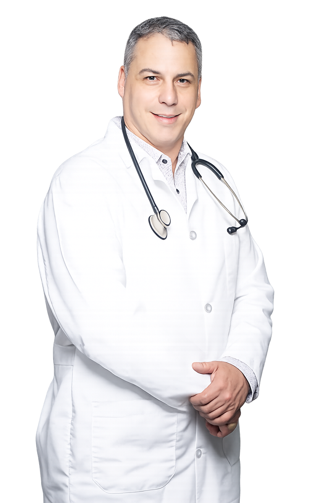

A trusted primary care clinic and spa dedicated to the health, well-being, and confidence of the Homestead community.
Una clínica de atención primaria y spa de confianza, dedicada a la salud, el bienestar y la confianza de la comunidad de Homestead.
To care for our patients and their families by providing exceptional, comprehensive service in a warm and welcoming environment. By bringing a full range of medical and wellness services together under one roof, we ensure every patient receives the care they need in a single location, delivered with compassion and respect, and guided by up-to-date health prevention and promotion practices aimed at improving individual health outcomes.
Cuidar a nuestros pacientes y sus familias brindando un servicio excepcional e integral en un ambiente cálido y acogedor. Al reunir una amplia gama de servicios médicos y de bienestar bajo un mismo techo, garantizamos que cada paciente reciba la atención que necesita en un solo lugar, con compasión y respeto, y guiados por prácticas actualizadas de prevención y promoción de la salud para mejorar los resultados individuales.
To become a trusted primary care clinic and spa dedicated to enhancing the health, well-being, and confidence of our community through compassionate medical care and personalized aesthetic services. We are committed to accessible, high-quality, patient-centered care that prioritizes prevention, early diagnosis, treatment, and long-term health management.
Convertirnos en una clínica de atención primaria y spa de confianza, dedicada a mejorar la salud, el bienestar y la confianza de nuestra comunidad mediante atención médica compasiva y servicios estéticos personalizados. Nos comprometemos a una atención accesible, de alta calidad y centrada en el paciente, que prioriza la prevención, el diagnóstico temprano, el tratamiento y el manejo de la salud a largo plazo.

Advanced Practice Registered Nurse · Family Medicine
Rene David Sifontes Mejias earned his Doctor of Medicine degree in Camagüey, Cuba in 1994, where he began his career practicing as a physician. He went on to specialize in Family Medicine in 1999 and Urology in 2013, building a strong background in patient care, diagnosis, treatment planning, preventive medicine, and the management of acute and chronic conditions.
Rene David Sifontes Mejias obtuvo su título de Doctor en Medicina en Camagüey, Cuba, en 1994, donde comenzó su carrera ejerciendo como médico. Posteriormente se especializó en Medicina Familiar en 1999 y en Urología en 2013, construyendo una sólida formación en atención al paciente, diagnóstico, planificación de tratamientos, medicina preventiva y manejo de condiciones agudas y crónicas.
After coming to the United States, he continued his calling in medicine. He trained and worked as a nurse before advancing to become an Advanced Practice Registered Nurse. With over 30 years of combined medical experience, including his work as a nurse practitioner in primary care, he is dedicated to providing comprehensive, compassionate, patient-first care to the Olivos Medical Center community.
Tras llegar a los Estados Unidos, continuó su vocación por la medicina. Se formó y trabajó como enfermero antes de avanzar a Enfermero de Práctica Avanzada. Con más de 30 años de experiencia médica combinada, incluyendo su trabajo como enfermero practicante en atención primaria, se dedica a brindar atención integral, compasiva y centrada en el paciente a la comunidad de Olivos Medical Center.
Experience care that treats you like family, in English or Spanish.
Vive una atención que te trata como familia, en inglés o español.